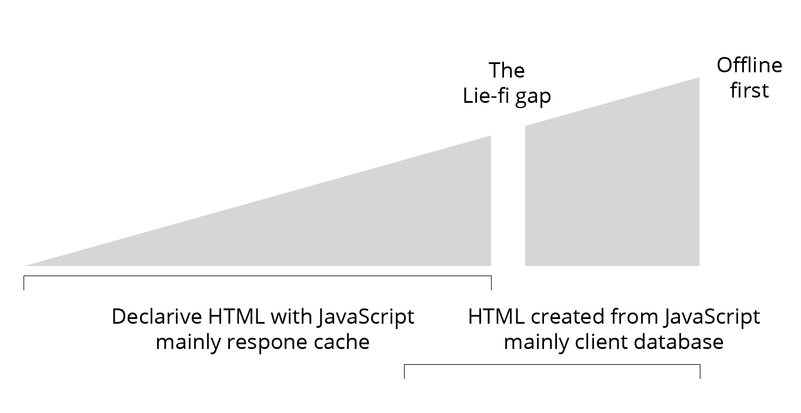

Extending theoffline web
"persistence of experience" for distant sources of content
The guardian jobs website
Responsive layout
Progressively less progressive
Andrew Betts - https://trib.tv/2016/06/05/progressively-less-progressive/
Mockup of a possible offline version

Mockup of a possible offline version
Progressively less progressive
Andrew Betts - https://trib.tv/2016/06/05/progressively-less-progressive/
An approach thats moresite funiture than app-shell
Tipping points foroffline UX and architecture
- The "Lie-fi" gap (offline first)
- All content is NOT equal when offlining a site
- Streams and notification UX patterns
1. The "Lie-fi" gap (offline first)
2. All content is NOT equal when offlining a site
- Size
- Frequency of renewal
- Multilpe conflicting writes sources
- Relevance to user
3. Streams and notification UX patterns

The move to streams and notification in mobile app can just be seen as part of the evolution of the products we design to communicate.
I would suggest these features are also driven by the offline properties (restrictions) of mobile devices.
What elements of document search can be provided offline
Mani
Document based search tool in javascripthttps://github.com/glennjones/mani

Creating the index and loading the documents
var options = {
'text': [
{'path': 'title', 'boost': 20},
{'path': 'text'}
]
}
var index = new Mani(options);
index.add({
title: 'Application Cache: Douchebag',
text: 'The Application Cache is one of the cool bits of HTML5...',
tags: ['appcache','html5','web app','offline']
...
});Free text query
- Simple
- Paging
- Sort
Facets
- Simple
- Properties
- Text
Structured queries
- Simple
- Operators
- Complex
Creating Geo Index
var options = {
'text': [
{'path': 'name', 'boost': 20},
{'path': 'tag'}
],
'geo': {
'point': {
'latitudePath': 'location.latitude',
'longitudePath': 'location.longitude',
}
}
}
var index = new Mani(options)Geo
- Nearby
- Offset
- Complex
Serialize data and indexs to JSON
// To JSON
var index = new Mani(options);
var json = JSON.stringify( index.toJSON() );
// From JSON
index.fromJSON( JSON.parse( json ));Persistent browser storage
var index = new Mani(options);
var persist = new Persist(index, {
name: 'places',
auto: true
}, function(err, items){
// add action such as search
});Built on top of
This project stand on the shoulders of others:
- lunrjs - free text search
- nedb - the query engine from nedb
- geolib - nearby search
- localForage - data persistance
Whats still missing from Manifor building offline expereience
- Sync
- Real-time updates
What did I learn...
Mani is an expereiment and is NOT production code
The techniques and approaches used are practical for certain data/content profiles
Consider using
- idb - Promises wrap of indexdb
- Dixe.js - Wrapper for indexdb
- Pouchdb - Universal db with sync
- Hoodie -
- Pusher
- Firebase